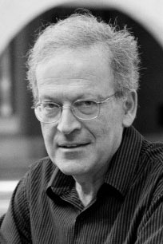

|  |
2010 год Leslie Gabriel Valiant (1949) «За вклад в теорию алгоритмов, включая приближенно правильное обучение (англ. probably approximately correct), теорию сложности перечисления и алгебраических исчислений, а также теорию параллельных и распределённых вычислений» |
Страна: Великобритания
Образование: Доктор философии в области информатики, Уорикский университет, 1974
О лауреате
В 1983 году Valiant опубликовал важную статью в области семантики когнитивных вычислений. В ней он разработал модель обучения, которая предлагает количественный критерий, для определения, когда компьютерное устройство может считаться способным к обучению. Эта, «вероятно, приблизительно правильная» (probably approximately correct - PAC) модель привела к созданию обширной области исследований, ныне известной как теория вычислительного обучения. Модель PAC рассматривает алгоритм обучения, который использует опыт прошлого, чтобы создать гипотезу, которая может быть использована для принятия решения в будущем с контролируемой ошибкой. Также одним из наиболее примечательных открытий, которые сделал Valiant, является то, что проблемы, связанные с подсчетом, гораздо более тонкие, чем предполагалось ранее – теперь решение задачи состоит не только в нахождении, является ли это число положительным, но и поиске того, насколько оно велико. Valiant расширил теорию классов сложности, включив новый класс подсчета #P. В области искусственных вычислений он проанализировал как управлять различными параллельными вычислительными системами. Он сосредоточил свою работу на исследовании роли, которую играет связь между параллельными процессорами. В 1990 году он опубликовал статью, в которой описывается его объемная синхронная параллельная (BSP) модель, которая оказала существенное влияние на то, как осуществляется параллельное вычисление.
Ключевые слова: Counting problem (complexity), Valiant-Vazirani theorem
Краткая библиография
| 1. |
Valiant, Leslie G., “Three Problems in Computer Science,” Journal of the ACM, Vol. 50, Num. 1, January 2003, pp. 96-99. В этой работе Valiant обсуждает основные проблемы информатики, которые легли в основу многих его работ. |
| 2. |
Valiant, L., "The complexity of computing the permanent," Theoretical Computer Science, Vol. 8, Num. 2, 1979, pp. 189-201. В этой статье содержатся результаты, которые показали, что проблемы с подсчетом гораздо более тонкие, чем предполагалось. |
| 3. |
Valiant, L., “A theory of the learnable,” Communications of the ACM, Vol. 27, Num. 11, pp. 1134-1142, 1984. В этой статье Valiant представляет свою «вероятно близкую к правильной» (PAC) модель обучения. В ней он представляет методологию изучения обучения с вычислительной точки зрения. |